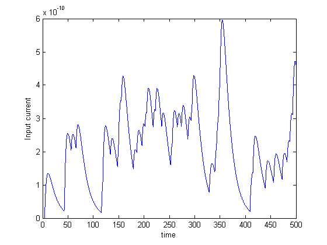
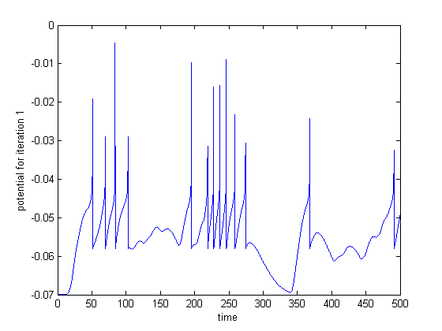
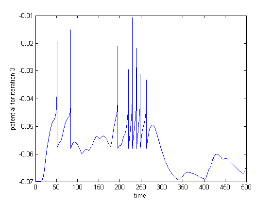

fprintf('question 1 part 1\n\n');
fprintf('Poisson stimulus generated\n\n');
q1p1
fprintf('question 1 part 2\n\n');
fprintf('for a random poisson stimulus, input current to the RS AEF neuron plotted, and the response of the neuron \n\n');
q1p2
fprintf('question 2 part 1\n\n');
fprintf('mean = 50, and sigma = 5\n\n');
fprintf('No spikes observed\n\n');
q2p1
fprintf('question 2 part 2\n\n');
fprintf('mean = 250, and sigma = 25\n\n');
fprintf('No. of spikes observed is given by the variable nspikes\n\n');
q2p2
fprintf('question 3 part 1\n\n');
fprintf('the number of iterations, for the first spike, is given by count');
fprintf('the set of weights is given by we\n\n');
q3p1v3
fprintf('question 4 part 1\n\n');
fprintf('the number of iterations, for the first spike, is given by count');
fprintf('the set of weights is given by we\n\n');
q4p1v1
fprintf('question 5 part 1\n\n');
fprintf('response S1 and S2\n\n');
q5p1
fprintf('question 5 part 2\n\n');
fprintf('stimuli 2 spikes suppressed\n\n');
fprintf('the resulting weights are printed as we\n\n');
q5p2
fprintf('question 5 part 3\n\n');
fprintf('stimuli 2 spikes suppressed ensuring that stimuli 1 results in spikes\n\n');
fprintf('the weights are displayed as we\n\n');
q5p3
fprintf('question 5 part 4\n\n');
fprintf('stimuli 1 spikes suppressed ensuring that stimuli 2 results in spikes\n\n');
fprintf('the weights are displayed as we\n\n');
q5p4
question 1 part 1
Poisson stimulus generated
question 1 part 2
for a random poisson stimulus, input current to the RS AEF neuron plotted, and the response of the neuron
nspikes =
0
question 2 part 1
mean = 50, and sigma = 5
No spikes observed
number of spikes =
nspikes =
0
question 2 part 2
mean = 250, and sigma = 25
No. of spikes observed is given by the variable nspikes
number of spikes =
nspikes =
8
question 3 part 1
the number of iterations, for the first spike, is given by countthe set of weights is given by we
count =
5
we =
Columns 1 through 7
45.6056 56.4542 52.7872 54.6746 47.4741 121.8361 42.3007
Columns 8 through 14
52.3236 47.6510 52.2790 46.7795 54.7276 49.9712 47.2580
Columns 15 through 21
52.7375 50.7378 49.7131 59.2632 46.8789 220.8674 38.1393
Columns 22 through 28
45.9582 46.8743 47.9276 43.0841 50.6792 50.4946 46.5211
Columns 29 through 35
45.5000 45.4750 48.3846 97.0609 48.5729 50.2901 40.4962
Columns 36 through 42
47.9633 43.7685 52.2682 47.1234 52.1232 54.4047 51.5041
Columns 43 through 49
55.6171 139.0999 55.8217 48.5442 54.0469 49.9831 44.8149
Columns 50 through 56
45.1636 47.4139 61.0740 45.4593 52.1036 51.8337 58.2020
Columns 57 through 63
53.2046 206.7569 38.2712 43.8285 48.7358 49.1322 45.3933
Columns 64 through 70
43.7518 49.0117 48.4249 43.3461 56.1561 40.8181 53.8448
Columns 71 through 77
45.6887 48.7137 49.9377 52.8546 45.7260 52.6354 71.9818
Columns 78 through 84
51.8374 50.7268 48.0508 52.5639 46.8634 43.9379 142.0286
Columns 85 through 91
44.5784 53.4589 40.9055 58.1640 53.9003 43.3484 50.8278
Columns 92 through 98
56.5738 41.6177 51.6956 58.0752 42.7029 49.4267 47.7810
Columns 99 through 100
57.0299 58.7412
Elapsed time is 1.636808 seconds.
question 4 part 1
the number of iterations, for the first spike, is given by countthe set of weights is given by we
we =
Columns 1 through 7
217.9745 263.0946 272.4811 260.9213 21.7275 257.4678 211.2512
Columns 8 through 14
248.3435 242.9539 286.8084 284.7311 253.1364 172.0299 10.0000
Columns 15 through 21
181.5734 10.0000 264.3034 222.2817 277.5711 210.0974 142.4018
Columns 22 through 28
147.1423 231.6119 200.7869 287.5709 268.9085 266.7794 240.8026
Columns 29 through 35
72.1080 10.0000 230.3280 227.8861 248.3154 259.4479 232.3339
Columns 36 through 42
259.7386 258.9480 257.2699 246.2720 259.7390 199.8346 304.5420
Columns 43 through 49
185.8048 290.8209 243.9091 230.0507 248.7406 236.3686 229.5339
Columns 50 through 56
128.1177 240.3585 260.9454 47.8630 278.2062 289.0521 247.3667
Columns 57 through 63
246.9425 234.0643 243.3930 204.5555 239.2178 42.2483 239.4536
Columns 64 through 70
239.9035 252.9129 255.2164 141.6010 239.9828 10.0000 255.9541
Columns 71 through 77
70.1496 10.0000 37.3565 66.7627 218.1751 224.6473 243.2021
Columns 78 through 84
289.9406 255.2148 225.8785 259.7998 273.3062 254.9287 10.0000
Columns 85 through 91
127.6675 10.0000 286.5341 293.1443 238.9209 298.7802 238.3162
Columns 92 through 98
208.6795 266.4271 43.7743 201.3503 242.1451 215.8934 264.0742
Columns 99 through 100
237.5085 309.0694
count =
5
question 5 part 1
response S1 and S2
nspikes =
7
nspikes2 =
9
question 5 part 2
stimuli 2 spikes suppressed
the resulting weights are printed as we
nspikes2 =
0
we =
Columns 1 through 7
193.6838 209.1203 199.9507 181.5786 208.1054 189.6162 200.5526
Columns 8 through 14
175.6074 213.8876 221.1633 203.9185 188.2439 211.8873 217.9225
Columns 15 through 21
206.5863 186.8861 210.4929 223.3719 191.7335 176.9052 185.0479
Columns 22 through 28
189.8709 215.5002 233.3564 188.3620 199.4250 210.6723 207.6268
Columns 29 through 35
212.9071 183.9770 206.2429 191.5169 224.2535 195.5432 207.5340
Columns 36 through 42
224.9100 193.3008 225.1779 182.8197 196.3063 221.8285 200.2648
Columns 43 through 49
176.1509 240.0198 192.0029 231.2103 186.4192 179.6792 214.8147
Columns 50 through 56
198.8143 202.5854 181.9829 204.3746 193.6191 195.6821 174.5993
Columns 57 through 63
197.4819 230.8562 163.7023 179.0711 187.3524 227.5548 182.0958
Columns 64 through 70
203.2888 192.1958 191.8493 219.7828 231.9347 202.1899 223.7325
Columns 71 through 77
170.9647 196.5608 215.5136 187.6091 202.8049 173.5233 216.1365
Columns 78 through 84
177.0012 220.6870 211.6285 257.5385 188.6635 201.3071 213.8444
Columns 85 through 91
225.1308 154.8844 177.6055 189.0151 173.8825 201.5772 204.6852
Columns 92 through 98
225.6494 176.5857 226.3420 214.3248 208.0486 187.2989 188.3584
Columns 99 through 100
227.0314 196.3831
question 5 part 3
stimuli 2 spikes suppressed ensuring that stimuli 1 results in spikes
the weights are displayed as we
No. of spikes for S1 :
nspikes =
10
No. of spikes for S2 :
nspikes2 =
0
Strength of the synapses :
we =
Columns 1 through 7
228.3000 200.1981 224.4257 202.2328 239.1229 221.0623 204.0421
Columns 8 through 14
198.9031 208.0071 191.6106 193.5090 219.1907 211.7792 164.9883
Columns 15 through 21
216.6166 228.7864 186.1907 196.7884 187.2416 204.7600 160.6096
Columns 22 through 28
222.4068 191.1985 193.2105 221.3574 196.1943 201.6889 203.5911
Columns 29 through 35
171.6448 190.7924 211.7406 194.8443 190.0211 185.1803 225.4498
Columns 36 through 42
188.5245 218.7726 201.7316 222.7134 181.4941 188.5548 184.2436
Columns 43 through 49
208.1090 207.5178 204.4735 237.1531 204.0275 216.0104 171.1348
Columns 50 through 56
230.0041 204.5797 193.9855 176.6974 240.0926 198.0126 221.0904
Columns 57 through 63
204.7057 208.0485 187.1236 229.5360 192.6478 173.2149 173.0334
Columns 64 through 70
201.7994 201.6710 200.7082 182.6167 223.9432 177.1533 214.6164
Columns 71 through 77
223.6506 220.9958 204.6161 175.1504 240.0774 202.7278 200.1423
Columns 78 through 84
193.9217 178.2083 163.1296 190.0005 225.9661 194.1732 201.6044
Columns 85 through 91
187.5459 185.2237 156.3500 197.6044 197.6922 208.0105 168.1816
Columns 92 through 98
238.7715 209.5773 226.7386 205.8072 217.0173 246.2342 206.6400
Columns 99 through 100
216.9743 217.8420
question 5 part 4
stimuli 1 spikes suppressed ensuring that stimuli 2 results in spikes
the weights are displayed as we
No. of spikes for S1 :
nspikes =
0
No. of spikes for S2 :
nspikes2 =
6
Strength of the synapses :
we =
Columns 1 through 7
206.9376 220.4115 45.4774 197.7832 208.5019 213.9322 182.0560
Columns 8 through 14
229.4925 188.6687 176.1660 184.6307 226.0972 225.6613 226.8838
Columns 15 through 21
198.1212 200.0435 137.7982 202.6779 194.6994 193.6383 219.4549
Columns 22 through 28
250.4642 172.7767 244.5477 218.7986 216.9774 185.7553 161.7728
Columns 29 through 35
178.7491 210.8029 168.2469 192.9263 211.4220 216.7924 208.7122
Columns 36 through 42
188.0114 171.5342 212.2722 207.1319 198.9124 186.1521 197.4425
Columns 43 through 49
165.6508 175.3370 215.7721 112.2920 175.0959 135.9509 181.7059
Columns 50 through 56
50.8776 132.6754 195.6131 200.2193 170.5458 216.2763 213.1818
Columns 57 through 63
193.3772 68.2011 187.6964 200.4555 183.5039 168.5609 222.7716
Columns 64 through 70
206.6720 183.2336 219.3749 191.1044 208.4110 160.6850 123.2774
Columns 71 through 77
199.0347 218.5997 176.9018 78.6450 230.2642 185.2372 176.1245
Columns 78 through 84
228.5865 184.7178 175.0389 202.4438 172.8443 167.5854 199.6208
Columns 85 through 91
198.0335 216.4585 68.0761 185.0205 207.4133 146.0114 184.3172
Columns 92 through 98
181.6960 197.4169 198.8704 63.7159 221.8416 192.4023 218.7194
Columns 99 through 100
165.4491 223.1762


  